the tension in one glance
Overview
The four-person class team studied whether shoppers could search and filter for a product, add an item directly from a listing, and save one for later. The aim was to compare observed task performance with what participants said about the experience.
Core finding: A formal-study mean SUS score of 81.5 described generally positive perceived usability. But the task records were less positive. Only two of five fully completed the filtering task and three of five fully completed quick add. Favorites reached five of five full completions, with friction for some participants.
Team: Alisha Jordan, Chyna Little, Karena Blue, and Vicky Kimani. The study findings and recommendations are the team's shared work.
My contribution
I moderated usability testing sessions and observed additional sessions led by teammates. I contributed to the collaboratively written report, helped develop the final presentation, and presented its Results & Findings section. For this portfolio, I independently designed the desktop and mobile filter and quick-add concepts shown below.
positive ratings can hide task problems
Key evidence
01 · Filters interrupted the search path
Observed: P1 and P4 did not complete the task after filters returned no results or reset. P2 found a coat by scrolling but did not use filters, so their outcome is partial. P3 completed the task while noting that filters cost time.
Recommendation: investigate result and reset behavior, then test clearer filter labels, persistent selections, and visible result counts. These changes were proposed, not implemented or validated in this study.
02 · Quick add was easy to miss
Observed: P1 first opened the product page instead of using the listing control. P3 did not use quick add, and P5 partially completed the task. Three of five fully completed it.
Recommendation: test a more prominent, clearly labeled quick-add control on product cards, with visible feedback after activation.
03 · Favorites succeeded, with friction
Observed: all five formal participants completed the task. P1 struggled to find the heart control and encountered an account-creation prompt; P2 corrected an initial mistake.
Recommendation: make the save control easier to identify and clarify the sign-in step before it interrupts saving. Whether guest saving is feasible requires separate product and technical review.
In the participants' words. Post-task answers recorded in the report appendix (the participant isn't identified there).
Filtering: “Simple but difficult cause filter is not working.” Time satisfaction: “disappointed.” Feeling: “Sad, cause you couldn't find the coat.”
Quick add: “Neutral, just ok, also confused with the add to cart icon.”
Why this matters (my inference, not a measured result): in a shopping flow, a filter that returns nothing or resets is a dead end. If 2 of 5 shoppers cannot finish filtering, some of them leave without finding a product to buy. The redesign targets that dead end.
Moderated think-aloud shows the route, not just the result. Scrolling to a coat and using filters look the same in a survey but not on screen.
Define pass/fail thresholds before testing, and recruit with a stricter screener so new and returning shoppers can be compared.
Public desktop site only, five sessions, and class-project time, so findings are directional and the fix is a proposal.
patterns, reasons, and tradeoffs
Design decisions
My concept already used a one-click recovery and a size picker inside the card. To check those choices rather than assume them, I compared each with two alternatives as greyscale wireframes.
When filters return nothing
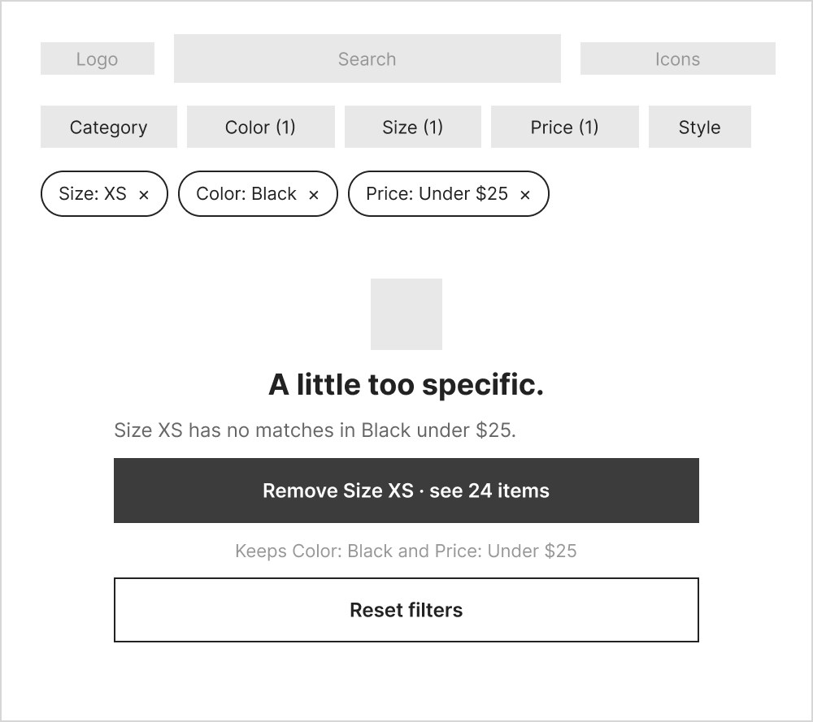
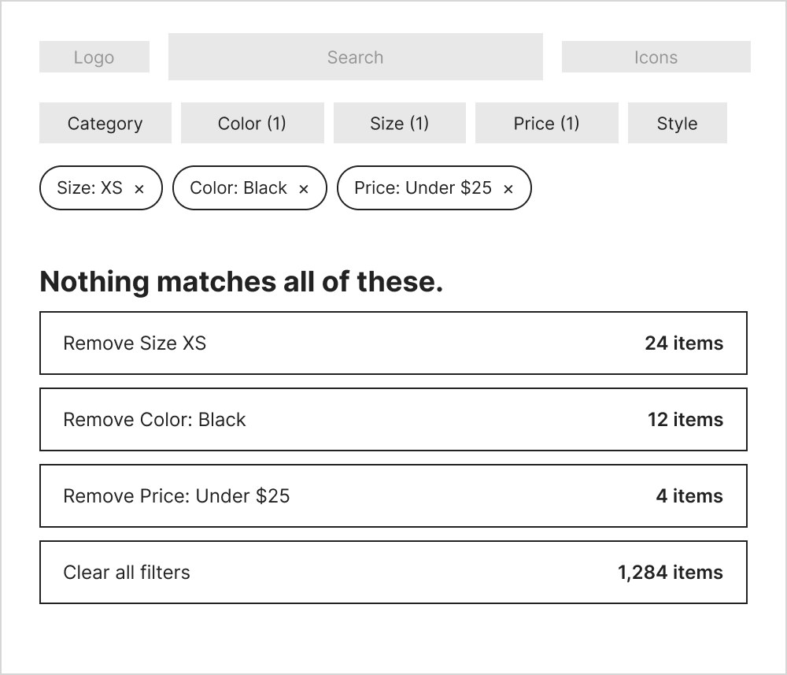
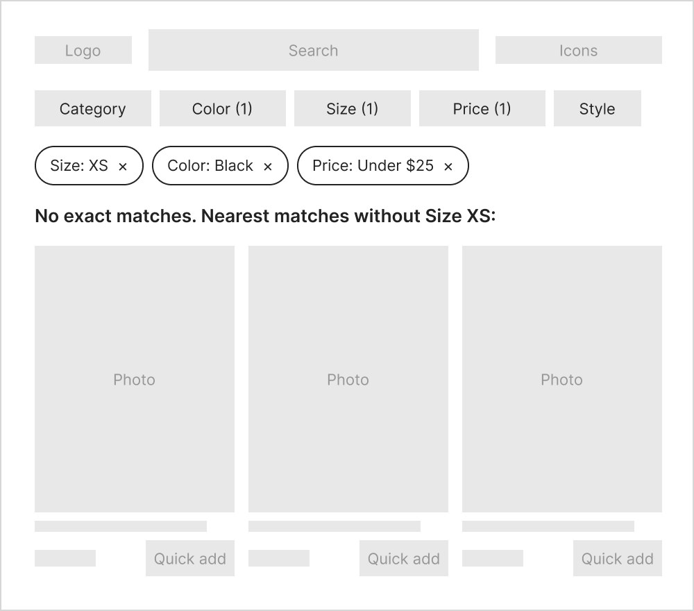
Decision: I kept Option A. In the study, the two participants who hit a dead end gave up, so the recovery has to be a single obvious step. Reset filters stays as the fallback.
Choosing a size without leaving the results
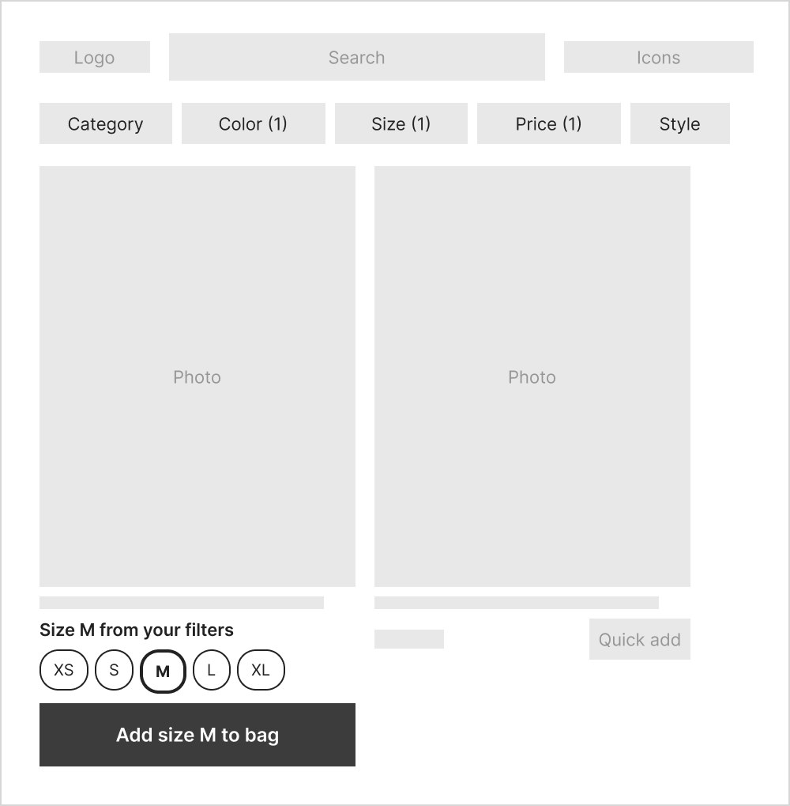
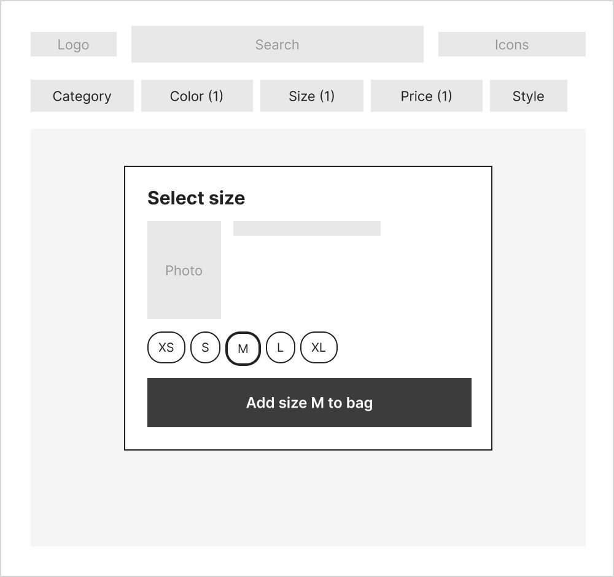
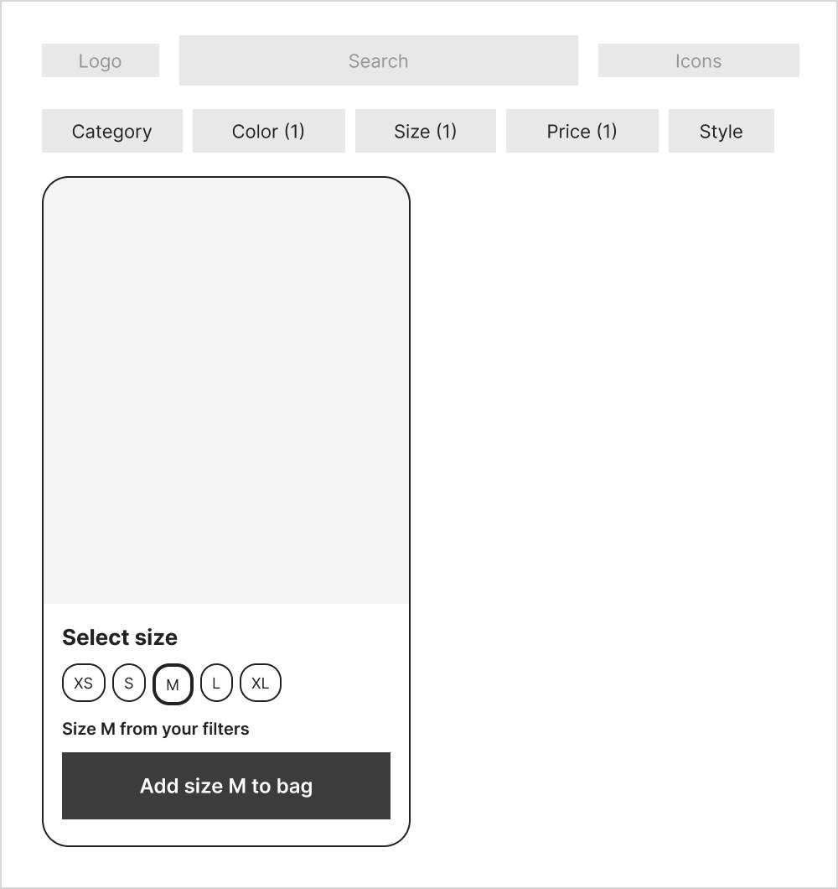
Decision: I kept A on desktop and C on phones. Both keep the shopper on the results page, which is where one participant was lost when they opened the product page instead.
SHEIN’s look, with only the flagged parts changed
Prototype
I restyled the concept to match SHEIN’s current interface. The search-bar header, category circles, filter pills, dense product grid, orange sale prices and black buttons stay familiar, so a test measures the changed interactions rather than a new look. Only the parts the study flagged are new.
- Visible, removable filter chips. An “Applied” row shows every active filter with a remove control, and the pills show counts such as “Size (1)”. Responds to: filters that reset or returned nothing with no explanation.
- A recoverable empty state. It names the one filter to drop and how many items that restores, keeping the rest. Reset filters is the fallback.
- A labeled quick add. “Quick add” with a cart icon replaces the icon-only control. Responds to: a participant “confused with the add to cart icon” and another who opened the product page.
- The filtered size carries over. The picker preselects Size M with a plain note, and the confirmation names the size: “Added to bag · Size M.”
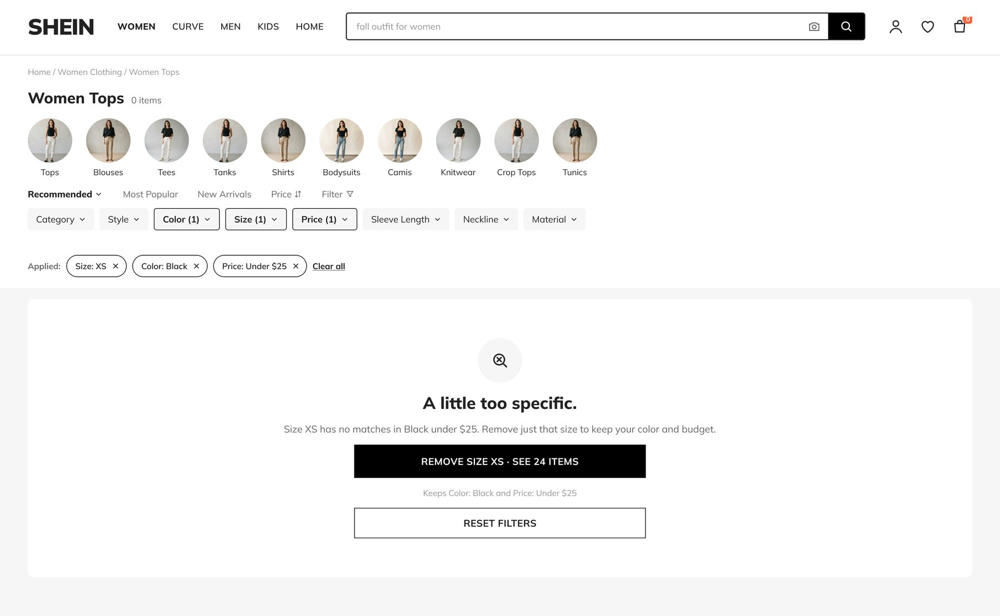

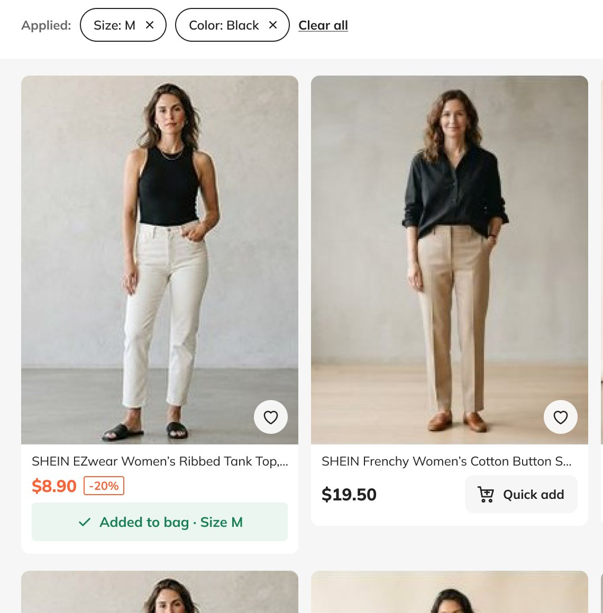
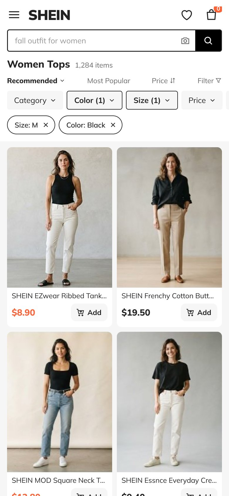
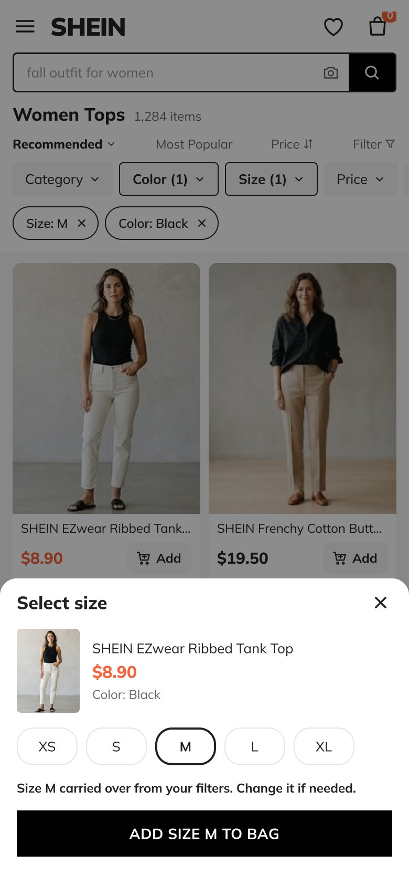
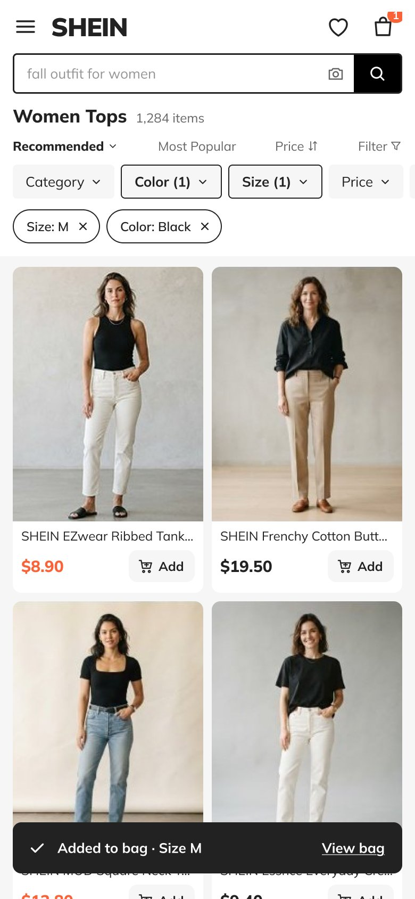
What needs testing: does carrying over a filter size help shoppers choose correctly, or do they mistake it for a confirmed choice? Check whether people notice the selection, change it when needed, and understand the confirmation.
From empty results back to products
Proposed wireflow: simplified layouts and actions show the recovery sequence. Counts are illustrative; this flow has not been tested.
-
Apply filters
Search resultsSize M · Black · BudgetApply another filter →The applied row keeps current selections visible.
-
Reach an empty state
No matching productsName a filter that can be relaxed.Remove named filter →Show which constraint changes and the expected result count.
-
Restore results
Products returnRemaining filters stay applied.Review matching products →Remove only the named filter. Preserve the remaining selections.
-
Continue shopping
Product gridApplied filters stay visible.Quick add / adjust filtersIf recovery is unsuitable, let shoppers change another filter or reset all.
Try the no-results case in the prototype below →
Try the prototype
Open a filter pill, remove a chip, or use quick add. Switch to the phone view for the size sheet. Products and prices are fictional.
Independent concept, not an official SHEIN design or affiliated with SHEIN. Product photos, names, prices and counts are illustrative.
what was tested and what comes next
Evaluation
| Metric | Baseline | Target in a retest |
|---|---|---|
| Filtering task completion | 2 of 5 (40%) | At least 4 of 5 (80%) |
| Participants who recover from a zero-result page | 0 of 2 who hit it | Most recover without restarting |
| Size chosen matches the shopper’s intended purchase | Not measured in the original study | Observe correct changes from a preselected size; record accidental acceptance and final confirmation understanding. |
| Quick add used without opening the product page | 3 of 5 fully completed | At least 4 of 5 |
Targets are mine, set before any retest. With 5 participants a retest shows direction, not proof.
Established by this study
The formal task tables show uneven completion across three shopping flows, while the reported SUS scores show generally positive perceived usability with wide variation. Specific filter failures, quick-add detours, and favorites friction are documented.
Still uncertain
Five formal sessions cannot establish prevalence across shoppers. The report suggests familiarity or low prices may explain favorable impressions, but these are hypotheses here. No follow-up study shows that the recommendations improve task success, satisfaction, conversion, or revenue.
Size-change task: ask a shopper to filter for size M while browsing, then buy an item in size S as a gift. Observe whether they notice the carried-over M, select S, and interpret the final confirmation correctly. Run this on desktop and phone; this is a proposed task, not a completed session.
Retest plan: test the prototype’s filter and quick-add changes, recruit a mix of new and experienced shoppers, and repeat the same desktop tasks. Record full, partial, and unsuccessful outcomes alongside time, errors, post-task feedback, and SUS so behavior and perception can be compared again.
Success looks like: filtering fully completed by at least 4 of 5 participants (up from 2 of 5), and quick add by at least 4 of 5 (up from 3 of 5), without lowering SUS.
Where recommendations became work: this study did not implement its changes. The same research-to-decision approach shaped my Sigma Gamma Rho navigation redesign, where card-sort and tree-test findings became desktop and mobile designs with a clickable prototype. That project is untested too, so it shows the translation from findings to design, not a measured result.
Research integrity and source notes
- Recruitment: the method section requires prior SHEIN use; the consent appendix allows 0–3 uses, while its screener terminates zero-use respondents. The exact criterion applied to this sample needs confirmation.
- Measures: the plan lists task time and ASQ, and the presentation's method slide labels task success Yes/No even though its results slide includes Partial. The report's results provide no usable time or aggregate ASQ table. This page uses the participant-level Yes/Partial/No statuses and does not infer missing measures.
- Source summaries: the presentation's “3/3 tasks completed” conclusion and the pilot's “all tasks completed” sentence conflict with their task tables. This page follows the tables and separates P0 from P1–P5.
Sources used for this case study: HCI 460 Final Usability Testing Report (primary, March 4, 2026) and 460 SHEIN Final Presentation (supporting, March 9, 2026). No participant names, recordings, or consent materials are reproduced.
methods and detailed results
Supporting research
How I assessed the results
Benchmarks I'm judging against. Set retrospectively for this write-up; the original study defined no pass/fail thresholds.
| Measure | Benchmark | Result | Read |
|---|---|---|---|
| Task completion (each task) | ≥ 80% full completion | Filter 40% · Quick add 60% · Favorites 100% | 2 of 3 tasks miss |
| Perceived usability (SUS) | ≥ 68, the commonly cited average | 81.5 mean (range 32.5–100) | Above benchmark, but the spread is wide |
| Perception vs. behavior | Scores and task outcomes agree | They diverge | The main finding |
Why 80%: a common rule-of-thumb threshold for “usable” task success. With n = 5, each participant is 20 points, so treat the gaps as direction, not proof.
Research questions and method choice
- Could participants find a product and use filters to narrow the results?
- Could they recognize and use quick add without opening a product page?
- Could they save an item to favorites, and what interrupted that path?
- How did task behavior compare with reported ease and overall perceived usability?
Moderated, think-aloud testing let the team observe the route each person took and ask about difficulty after a task. We needed that, because finding a coat by scrolling is different from successfully using filters, and adding from a product page is different from using quick add.
Study design
Participants & setting
One pilot participant (P0) and five formal participants (P1–P5) were recruited through personal networks and a social-media volunteer list. Sessions used the SHEIN desktop website with remote screen sharing via Google Meet or Zoom. The report describes prior SHEIN use, but its exact screening rule is inconsistent; see the evidence notes below.
Tasks & measures
Participants thought aloud through search and filtering, quick add, and favorites tasks. The results tables record full, partial, or unsuccessful completion, difficulty ratings, errors, and observations. SUS captured overall perceived usability after the session. Task time and ASQ appear in the plan, but usable summaries are absent from the final results.
The convenience sample, five formal sessions, and prior site experience limit how far these results can be generalized. The study observed the existing interface; it did not test a redesign.
What the pilot changed
The February 17 pilot (P0) exposed a task-script problem: Task 1 needed clearer wording, and Task 2 needed a complete rewrite to prompt the intended quick-add behavior. The team revised those instructions before the five formal sessions.
Full formal-study results
These counts are calculated from the report's participant-level results tables for P1–P5. “Partial” stays separate rather than being counted as a full success.
| Task | Full | Partial | Unsuccessful | Reading the result |
|---|---|---|---|---|
| Search & filter | 2 of 5 | 1 of 5 | 2 of 5 | The partial participant found a coat by scrolling without using filters. |
| Quick add | 3 of 5 | 1 of 5 | 1 of 5 | Opening a product page did not demonstrate quick-add use. |
| Save to favorites | 5 of 5 | 0 of 5 | 0 of 5 | Full completion coexisted with icon and sign-in friction. |
Portfolio synthesis from the report's formal-participant tables and observations; this is not an original session artifact.
-
Observed route
One participant found a coat by scrolling without using filters. Two others encountered no-result or reset behavior and did not complete the task.
-
Interpretation
Finding the product did not demonstrate that filtering worked. The scrolling route therefore remains a partial outcome.
-
Proposed test
Reproduce the no-result and reset states, then test persistent selections, clearer labels, and visible result counts.
Perceived usability: the five formal SUS scores listed in the report average 81.5. The report's 82.5 average includes P0. SUS is a usability score, not a percentage or a measure of task completion. The formal scores span 32.5 to 100, so the mean masks substantial variation.
Source: final report, results tables on pp. 7–9; presentation slide 11 corroborates task statuses and SUS scores. These are calculations from the report's tables; original questionnaire responses and session recordings have not been independently verified.
Prioritized recommendations
| Issue | Observed evidence | Proposed severity & rationale | Change to test |
|---|---|---|---|
| Filtering blocks progress | P1 and P4 did not finish; P2 found a coat by scrolling rather than filtering. Full completion: 2 of 5. | High. Blocks the intended task, with no successful recovery documented for the two failed sessions. | Persistent selections, visible filter chips, and an empty state that names one constraint to remove. |
| Quick add is missed | P1 opened a product page first; P3 did not use quick add; P5 partially completed. Full completion: 3 of 5. | High for this task. The listing interaction fails or takes a detour; this does not establish that buying an item is impossible. | A labeled quick-add control and clear size selection and confirmation. |
| Favorites creates friction | All 5 completed; P1 had icon and account-prompt friction, and P2 corrected an initial mistake. | Moderate. Interruptions were recoverable in the observed sessions. | Clearer save control and advance notice of sign-in requirements. |
Severity is my retrospective judgment of task blockage and observed recovery, not an original team rating or an estimate of prevalence across shoppers. Recommendations remain untested.
Retrospective analysis: this order is a later interpretation of the formal task counts and documented friction, not a ranking recorded in the original report or a claim that any change was shipped.
Fix and retest filtering
Two unsuccessful and one partial outcome make this the clearest task barrier. First reproduce no-result and reset behavior; then test stable filter selections, clearer labels, and result feedback.
Make quick add recognizable
One unsuccessful and one partial outcome, plus a documented detour into the product page, support testing a visible label, stronger contrast, and clearer feedback.
Smooth the favorites path
All five completed it, so this follows the completion barriers. Test icon visibility and explain when sign-in is required. The report also notes disruptive overlays and navigation; capture their frequency in a follow-up study.
Components and tokens
The new pieces follow SHEIN’s existing visual language. Each one has the states the flows need. Hover the specimens to see them.
Color
#222222Text, selected outlines
#000000Primary buttons, search button
#FA6338Sale prices, bag count
#F6F6F6Filter pills, quick add, page ground
#E5E5E5Borders, disabled fills
#198055Added-to-bag confirmation
Filters
Pill, active pill, applied chip. The active pill shows a count and an outline; the chip removes that filter.
Size and quick add
Size default, selected, sold out; labeled quick add; confirmation. Sold-out sizes are struck through and can’t be chosen.
Buttons
Primary, secondary, disabled. Uppercase labels on black, matching SHEIN’s add-to-bag button.